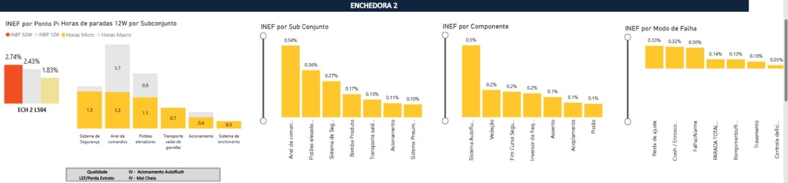
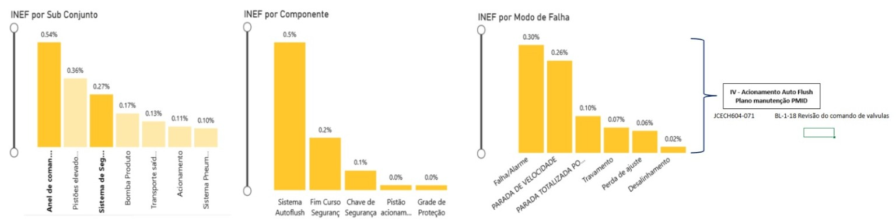
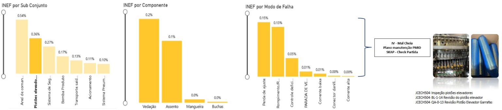
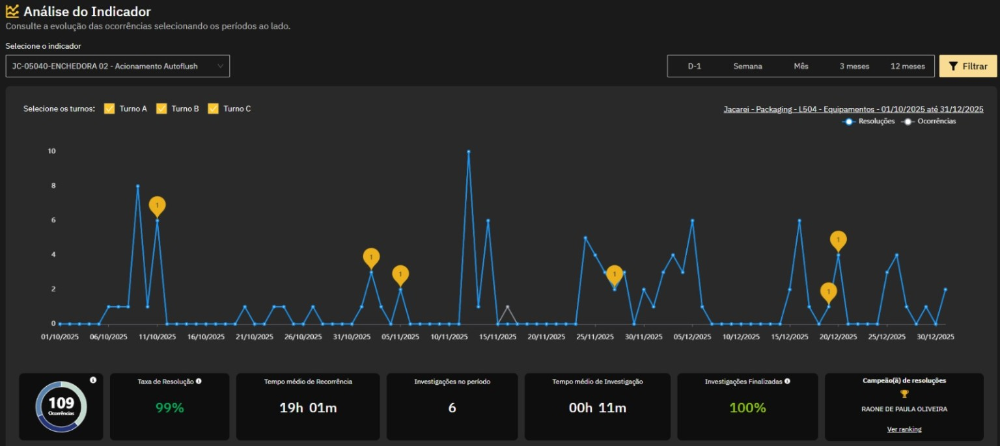
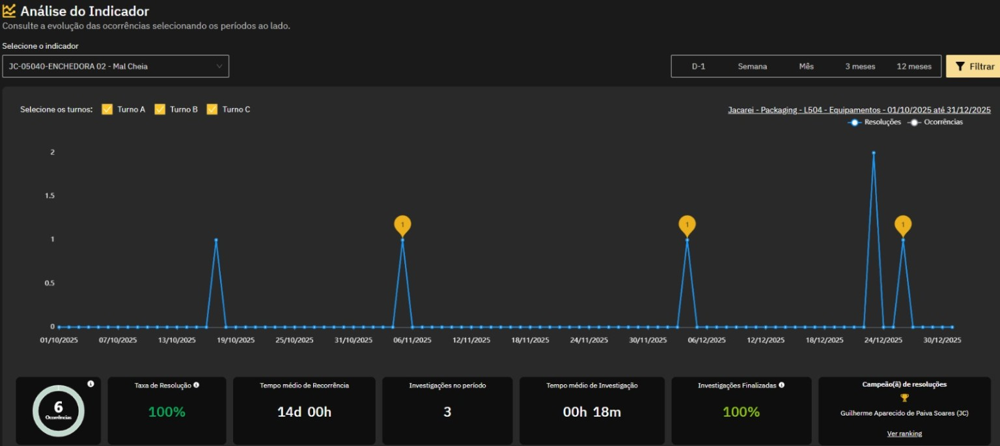

Etapa 2
Análise estruturada
Funil analítico: máquina → subconjunto → componente → modo de falha → plano do Dia D.

Leitura
Os maiores impactos orientaram a abertura dos subconjuntos e a definição dos pontos físicos para inspeção.

0,54%Anel de comandos
0,50%Sistema Autoflush
0,30%Falha/alarme
0,26%Parada de velocidade

0,36%Pistões elevadores
0,20%Vedação
0,15%Perda de ajuste
0,13%Rompimento

Autoflush
109 ocorrências, 99% de resolução e recorrência média de 19h01.

Mal Cheia
6 ocorrências, 100% de resolução e recorrência média de 14 dias.